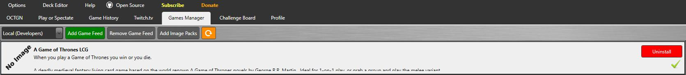

Tutorial: Como jogar A Game of Thrones LCG v1 no OCTGN.
1o Passo: Baixar o OCTGN.
Acesse o site https://www.octgn.net/Home/GetOctgn e baixe a última versão do programa. Proceda a uma instalação padrão. É possível usar o OCTGN através de um Mac ou Linux/Wine.
2o Passo: Instalar o jogo AGOT-LCG.
Adicione um novo game feed com o seguinte endereço:
https://www.myget.org/F/agotlcg/api/v2

3o Passo: Baixar o arquivo de imagens das cartas.
Acesse o link Pacote de Imagens e baixe o pacote de imagens [OCTGN]-AgoT_LCG-Full_Pack_(Uncensored_HQ_Images_Pack).o8c com imagens de alta resolução. Para adicioná-las ao OCTGN, na imagem acima clique no botão “Add Image Packs”
Estamos prontos para jogar!